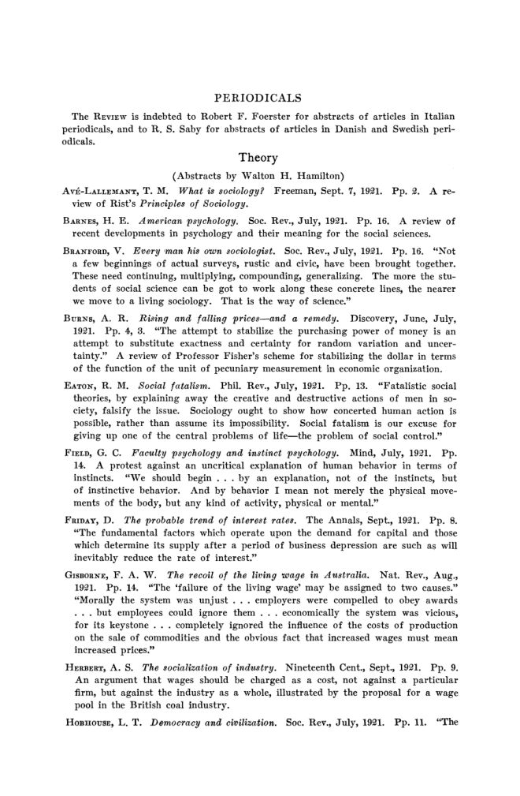

Gregg, a frota do governo, os ciclos de greves e a regulação de preços
Leitura: 15 min
Gregg propõe vender a frota do governo a preço de paz; Hansen liga greves ao ciclo; Bird descreve salários indexados em Chicago; Tugwell busca na teoria a base da regulação.


Na conta de E. S. Gregg, os Estados Unidos gastaram cerca de quatro bilhões de dólares para montar uma frota mercante oceânica a vapor que só perdia para a britânica e era três vezes maior que a da França ou a do Japão. Em 1914, a bandeira americana cobria 725 mil toneladas brutas de navios registrados para o comércio exterior; em 1º de julho de 1921, 10,6 milhões. O número de dezembro de 1921 da American Economic Review, o último do volume XI, abre com a pergunta sobre o que fazer com esses navios num mercado de fretes em depressão.
O resto da edição gira em torno de um mesmo problema: preços e salários que não se ajustam sozinhos, ou que se ajustam mal. Alvin H. Hansen, da University of Minnesota, mede como o número de grevistas acompanha o ciclo econômico de 1881 a 1919. Francis H. Bird, de Chicago, descreve os reajustes salariais pelo custo de vida na indústria gráfica da cidade entre 1916 e 1921. Rexford G. Tugwell, da Columbia University, procura na teoria econômica a justificativa para a regulação de preços de empresas privadas. E Victor Rosewater, de Omaha, numa comunicação, contesta o uso de orçamentos familiares e números-índice para medir salários reais.
Por que a lei da marinha mercante de 1920 não funcionou?
E. S. Gregg (New York City) · “The Failure of the Merchant Marine Act of 1920” · pp. 601–615
A lei aprovada pelo Congresso e sancionada em 5 de junho de 1920, com 39 seções, declarava necessário ter uma marinha mercante capaz de levar a maior parte do comércio do país, a ser no fim possuída e operada por cidadãos americanos. Gregg, mais de um ano depois, confronta o propósito com o desempenho, dispositivo por dispositivo: venda dos navios do governo, fundo de empréstimo para construção, isenção de impostos, subsídios postais, tarifas conjuntas de trem e navio, hipotecas navais e direitos discriminatórios.
Em 1º de julho de 1921, o Shipping Board ainda possuía 7,2 milhões de toneladas brutas de navios de aço, 64% do total. As primeiras vendas, em junho de 1919, pediam de US$ 210 a US$ 225 por tonelada de porte bruto; em menos de um ano as condições mudaram cinco vezes, enquanto os fretes de afretamento caíam de 25% a 50% até o meio do verão de 1920. Muitas vendas eram, na prática, afretamentos a casco nu, e os navios voltaram ao governo quando a receita caiu.
Os demais dispositivos, diz o autor, ficaram no papel ou ajudaram quem não precisava. O fundo de construção dependia de lucros que o Board não tinha: seu balanço do fim do exercício de 1920 mostrava déficit de US$ 513 milhões. A isenção fiscal alcançou sobretudo navios-tanque que grandes petroleiras haviam encomendado antes da lei. E o presidente declarou, em 24 de setembro de 1920, que não denunciaria os tratados comerciais, como mandava a seção 34; Gregg aplaude a decisão. A parte construtiva, para ele, é a nova legislação de hipotecas navais.
Daí a proposta: vender os navios construídos na emergência a US$ 30–40 por tonelada quando novos, com 5% a menos por ano de idade. As razões são de custo. A navegação rendera em média só 5% ao ano; havia no mundo 15,8 milhões de toneladas brutas de vapores a mais que os 43,1 milhões de 1913, para uma carga de quatro quintos da anterior; e um navio comprado a US$ 200 por tonelada tinha 53% do custo anual em encargos fixos, contra cerca de 25% dos concorrentes. Gregg sugere ainda desfazer-se de parte dos cargueiros pequenos e dos grandes navios de linha irregular e, enquanto durar a depressão, operar o restante com eficiência.
“Os economistas estão estranhamente calados sobre essa questão.” (“Economists are strangely silent on this question.”)
As greves sobem na prosperidade ou na depressão?
Alvin H. Hansen (University of Minnesota) · “Cycles of Strikes” · pp. 616–621
Hansen distingue dois aspectos da dinâmica econômica: o movimento rítmico do ciclo de negócios e a evolução econômica. A relação entre evolução e conflito industrial já tinha, diz, literatura volumosa; seu objetivo é medir o efeito do ciclo sobre as greves. O estudo cobre 1881–1919. Os dados de 1881 a 1905 vêm do relatório anual do Commissioner of Labor; para 1906–1914, sem estatística geral nos Estados Unidos, os números canadenses indicam o movimento; de 1915 em diante, valem os do Bureau of Labor Statistics. Os preços são os índices do Aldrich report e do mesmo Bureau.
As séries foram convertidas em números-índice com base em 1901–1905 e depois postas em escala comparável pelo desvio-padrão. O gráfico mostra tendências de longo prazo em sentidos opostos de 1881 a 1897, e por isso o autor divide o período em dois: preços em queda, de 1881 a 1897, e preços em alta, de 1898 a 1919.
A hipótese é que o comportamento das greves depende da tendência dos preços. Quando os preços caem no longo prazo, o trabalho fica na defensiva: luta contra cortes de salário, e a pressão por cortes é maior na depressão. Quando sobem, o trabalho passa à ofensiva, e a disputa se acirra nos anos prósperos, em que crescem o custo de vida e os lucros. O indício citado: a proporção de greves contra redução de salário foi duas vezes maior nas depressões de 1883–85 e 1893–97 que nos anos relativamente prósperos de 1881–82 e 1886–92; em 1899–1905, ficou abaixo de um quinto da registrada nas depressões do período de queda.
A conclusão é que as greves se correlacionam inversamente com o ciclo nos períodos de preços em queda no longo prazo e diretamente nos de preços em alta. O autor ressalva que os números de grevistas de 1915–1919 subestimam os fatos, pois só em 64% das greves desses anos se informou o número de pessoas envolvidas.
Um índice de preços pode substituir a barganha salarial?
Francis H. Bird (Chicago, Illinois) · “The Cost of Living As a Factor in Recent Wage Adjustments in the Book and Job Branch of the Chicago Printing Industry” · pp. 622–642
Bird atuou como estatístico consultor da Franklin-Division da Franklin-Typothetae of Chicago, a organização dos empregadores gráficos que negociava com os sindicatos, nos reajustes de 1919 a 1921, e avisa que as opiniões são suas. O objetivo declarado não é defender o princípio do custo de vida, então criticado pelo conselho executivo da American Federation of Labor, mas descrever como ele funcionou num setor. Os empregadores que tratavam com sindicatos controlavam de 55% a 60% da produção do ramo de livros e serviços gráficos e empregavam entre 9 mil e 10 mil pessoas.
Em 1916 assinaram-se contratos de cinco anos, com salários-base semanais de US$ 25 para os tipógrafos, US$ 26 para os impressores e US$ 18,50 para os alimentadores de prensa. A inflação desfez o arranjo. Os alimentadores, o sindicato de menor salário, fizeram greves ilegais em dezembro de 1917 e em junho de 1918 e obtiveram bônus de guerra depois estendidos aos demais; em setembro de 1918, o National War Labor Board concedeu-lhes US$ 3,50 com base exclusiva na alta de 16,2% do índice de custo de vida de Chicago. Em agosto de 1919, as partes adotaram uma cláusula automática: a cada seis meses, se o índice do Bureau of Labor Statistics para Chicago variasse 5% ou mais, os salários seriam revistos para cima ou para baixo.
A cláusula foi posta à prova quando os preços caíram. Os sindicatos recorreram ao argumento do atraso: os salários teriam ficado sempre atrás dos preços. A junta, presidida por Ralph E. Heilman, recusou o argumento quanto ao intervalo semestral, que não poderia funcionar nos dois sentidos, mas aceitou parte dele quanto às dez semanas. No balanço de Bird, o dólar do salário contratual de 1916 tinha, em maio de 1921, poder de compra de US$ 1,21 para os tipógrafos e de US$ 1,43 para os alimentadores, cujo salário, diz, se aproximara demais do dos impressores.
A conclusão é que a cláusula garantiu produção praticamente contínua num período de paralisações caras em outras indústrias, ao trocar a barganha por regra de bolso pela verificação de fatos em datas fixas. Bird pergunta se o mesmo método não poderia valer para padrões de produção.
“O velho lema de um dia de trabalho justo por um dia de pagamento justo é, afinal, o cerne.” (“a ‘fair day's work for a fair day's pay’ is after all the nub”)
Quando o Estado deve regular os preços de empresas privadas?
Rexford G. Tugwell (Columbia University) · “The Economic Basis for Business Regulation” · pp. 643–658
A expressão “affected with a public interest”, afetado por um interesse público, aparece com frequência nas decisões dos tribunais americanos, e dela nascem os controles que protegem o interesse econômico do público. Tugwell quer mostrar que esses controles têm base na própria teoria econômica. O ponto de partida é o vendedor: como vendedor, seu interesse é o maior lucro líquido possível, e o meio para isso é controlar a oferta. Só com concorrência perfeitamente livre a oferta efetiva coincidiria com a oferta possível.
As empresas importantes o bastante para serem reguladas operam, diz, com custos decrescentes, e nelas a combinação de concorrentes é inevitável no longo prazo, tanto pelas economias de escala quanto porque permite controlar preços. Nos bens de primeira necessidade, a demanda é muito inelástica no alto da escala de preços e só se amplia com reduções fortes; o vendedor pode preferir atender apenas aos compradores mais abastados. A regulação força a empresa a vender muito com lucro unitário baixo, e o lucro total não precisa cair.
Daí o conflito de interesses: o administrador busca o maior retorno líquido; o consumidor, a difusão mais ampla e barata dos bens. Intervir não fere a imparcialidade do Estado, que o autor se recusa a confundir com inação. Os tribunais vinham ampliando a regulação, às vezes, nota Tugwell, como se desafiassem a teoria econômica, como no voto do juiz Pound num caso de aluguéis em Nova York.
“Para ser imparcial, neste caso, o Estado precisa agir.” (“To be impartial in this case the state must act.”)
Para descobrir o monopólio, a investigação deve olhar o mercado inteiro, e não cada empresa: cinco firmas sem nada de irregular podem, por liderança tácita ou por um entendimento sem conspiração, produzir efeito de monopólio sobre os preços. A regulação deve ter por base o bem ou serviço, e não a dissolução de empresas, caminho dos atos antitruste que, diz, não foram muito bem-sucedidos. A substituição de produtos protege o consumidor contra a escassez natural, mas não deve ser sua única defesa contra a restrição artificial. Por fim, a comissão reguladora deve estimar a oferta necessária pelo consumo passado e fixar um preço que cubra o custo do produtor marginal, revendo-o quando as condições mudarem.
Orçamentos familiares medem o salário real?
Victor Rosewater (Omaha) · “Wages, Budgets, Cost of Living” · pp. 659–662
A comunicação responde ao artigo de abertura do número de setembro da Review, que concluíra que o poder de compra da semana de trabalho em 1918 era menor que em 1915. Rosewater diz que a conclusão pode ser sustentável, mas não está provada pelos orçamentos, números-índice e estatísticas salariais apresentados. Lembra um artigo seu, “What is the Cost of Living?”, publicado na Charities Review em abril de 1892, e invoca a experiência de negociar contratos salariais, sobretudo nas artes gráficas, levando quatro ou cinco deles a arbitragem em primeira e segunda instância.
Enumera nove pontos. Os sindicatos, em regra, recusaram salários variáveis atrelados a índices, prevendo que a queda de preços traria cortes automáticos. Não há índice-padrão, e os preços variam de cidade para cidade. Não há família operária-padrão: o orçamento teórico é o de um chefe de família com mulher e três filhos, sem outra renda, mas a escala salarial é a mesma para casados e solteiros. Com falta de mão de obra, outros membros da família passam a trabalhar e as horas extras se multiplicam. Os pesos dos índices não podem ser fixos quando a renda sobe e o consumo muda. Parar em 1918 deixa de fora o pico salarial de 1919 e 1920. O salário por hora diz pouco ao empregador sem a produção correspondente. E há outros custos do trabalho além do salário, como seguro de acidentes e pensões, além de regras de oficina que encarecem a produção.
O argumento final é distributivo. Os salários medem a parte do trabalhador no produto; sem aumento do produto, a parte maior de um fator é a parte menor de outro. A saída, para Rosewater, é elevar a eficiência geral, pela organização industrial, máquinas melhores, localização correta da indústria, formação profissional e saúde, e dar ao trabalhador a sua parte nos ganhos, em vez de mantê-lo sempre no mesmo lugar por reajustes atrelados a um índice.
O que mais há na edição?
As resenhas incluem Our Economic Organization, de Leon C. Marshall e Leverett S. Lyon, por Everett W. Goodhue; The Industrial State, de E. L. Bogart e G. M. Thompson, e Manufacturing Industries in America, de Malcolm Keir, ambos por Isaac Lippincott; The Non-Partisan League, de Andrew A. Bruce, por George M. Janes; The Electric Railway Problem, de Delos F. Wilcox, por John Bauer; The Financial Policy of Corporations, de Arthur Stone Dewing, por Stanley E. Howard; The High Cost of Strikes, de Marshall Olds, por Nathaniel R. Whitney; The Labor Movement, de Frank Tannenbaum, por Frank T. Stockton; Industrial Government, de John R. Commons e outros, por D. A. McCabe; o livro de Sir Josiah Stamp sobre os princípios da tributação, por Rufus S. Tucker; Great American Issues, de John Hays Hammond e Jeremiah W. Jenks, por Frank H. Streightoff; os livros de Solomon S. Huebner e William D. Winter sobre seguro marítimo, por Avard L. Bishop; e Teachers' Pension Systems in the United States, de Paul Studensky, por Henry J. Harris. Completam o número as listas de livros novos, documentos como o relatório da Tariff Commission sobre a criação de ovinos para lã, comentado por Abraham Berglund, resumos de periódicos e notas, com o programa da reunião anual em Pittsburgh, de 27 a 30 de dezembro, e o registro da morte de Henry Carter Adams, um dos fundadores da American Economic Association, em 11 de agosto de 1921.
Na minha leitura
Na minha leitura, o número de dezembro de 1921 é uma coleção de casos sobre o que acontece quando o preço deixa de fazer o ajuste sozinho. Gregg trata de ativos comprados a preço de guerra que só se vendem a preço de paz, e propõe reconhecer a perda de uma vez, em vez de cobri-la aos poucos com subsídios. Tugwell trata de mercados em que o preço reflete o controle da oferta, e não o custo, e pede ao regulador que reconstrua o preço que a concorrência daria. Bird e Rosewater discutem se um índice de custo de vida pode servir de regra salarial.
O ponto comum é de método: cada autor precisa de uma medida externa para julgar o preço observado. Gregg usa o valor de mercado dos navios; Tugwell, o custo do produtor marginal e as estatísticas de consumo; Bird, o índice do Bureau of Labor Statistics; Hansen, séries de preços e de grevistas depuradas da tendência. Rosewater lembra o limite dessas medidas: um índice médio aplicado a famílias e ofícios diferentes não diz quanto cada um ganhou ou perdeu.
Glossário
- Tonelada de porte bruto (deadweight ton)
- peso máximo de carga, combustível e provisões que um navio pode levar.
- Tonelada bruta (gross ton)
- medida do volume interno de um navio, usada para comparar frotas.
- Afretamento a casco nu
- aluguel do navio sem tripulação, em que o afretador arca com toda a operação.
- Shipping Board
- órgão federal americano que detinha e administrava a frota mercante do governo.
- Tendência secular
- movimento de longo prazo de uma série, separado das oscilações do ciclo.
- Coeficiente de correlação de Pearson
- medida, entre -1 e +1, de quanto duas séries variam juntas.
- Cláusula de custo de vida
- regra contratual que revê salários conforme a variação de um índice de preços.
- Affected with a public interest
- expressão dos tribunais americanos para negócios sujeitos a regulação de preço e serviço.
- Custos decrescentes
- situação em que o custo por unidade cai à medida que a produção aumenta.
- Produtor marginal
- o produtor de custo mais alto cuja produção ainda é necessária para completar a oferta.
Artigos (5)
- The Failure of the Merchant Marine Act of 1920 — E. S. Gregg (New York City) (pp. 601–615) · resenha acima · JSTOR
- Cycles of Strikes — Alvin H. Hansen (University of Minnesota) (pp. 616–621) · resenha acima · comentário completo · JSTOR
- The Cost of Living As a Factor in Recent Wage Adjustments in the Book and Job Branch of the Chicago Printing Industry — Francis H. Bird (Chicago, Illinois) (pp. 622–642) · resenha acima · JSTOR
- The Economic Basis for Business Regulation — Rexford G. Tugwell (Columbia University) (pp. 643–658) · resenha acima · comentário completo · JSTOR
- Wages, Budgets, Cost of Living — Victor Rosewater (Omaha) (pp. 659–662) · resenha acima · JSTOR
Resenhas (14)
- Leon C. Marshall e Leverett S. Lyon, Our Economic Organization — Everett W. Goodhue (Dartmouth College) (pp. 663–665). Manual elementar que descreve a organização econômica pelas funções de cada instituição. JSTOR
- E. L. Bogart e G. M. Thompson, The Industrial State — Isaac Lippincott (pp. 667–668). Volume do centenário de Illinois sobre os anos de 1870 a 1893, de transição para a indústria. JSTOR
- Andrew A. Bruce, The Non-Partisan League — George M. Janes (Washington and Jefferson College) (pp. 668–670). Estudo sobre a Non-Partisan League e seus empreendimentos na Dakota do Norte. JSTOR
- Malcolm Keir, Manufacturing Industries in America — Isaac Lippincott (Washington University) (pp. 679–681). Panorama das indústrias manufatureiras dos Estados Unidos. JSTOR
- Delos F. Wilcox, The Electric Railway Problem — John Bauer (New York City) (pp. 682–684). Análise preparada para a Federal Electric Railways Commission sobre a crise das ferrovias elétricas urbanas. JSTOR
- Arthur Stone Dewing, The Financial Policy of Corporations — Stanley E. Howard (Princeton University) (pp. 694–698). Tratado em cinco volumes sobre finanças de empresas, dos títulos à falência e reorganização. JSTOR
- Marshall Olds, The High Cost of Strikes — Nathaniel R. Whitney (University of Cincinnati) (pp. 698–701). Estudo sobre os custos das greves, com propostas de política trabalhista. JSTOR
- Frank Tannenbaum, The Labor Movement; Its Conservative Functions and Social Consequences — Frank T. Stockton (University of South Dakota) (pp. 701–702). Ensaio sobre as funções e as consequências sociais do movimento operário. JSTOR
- John R. Commons e outros, Industrial Government — D. A. McCabe (pp. 702–704). Obra coletiva de um grupo que visitou cerca de trinta empresas para estudar suas formas de relação de trabalho. JSTOR
- Sir Josiah Stamp, The Fundamental Principles of Taxation in the Light of Modern Developments — Rufus S. Tucker (Harvard University) (pp. 710–712). Seis conferências sobre os princípios da tributação diante das mudanças modernas. JSTOR
- John Hays Hammond e Jeremiah W. Jenks, Great American Issues, Political, Social, Economic — Frank H. Streightoff (Indiana University) (pp. 714–716). Panorama de questões políticas, sociais e econômicas dos Estados Unidos. JSTOR
- New Books (pp. 716–719). Lista de livros novos: problemas sociais e reformas, com notas de G. B. Mangold. JSTOR
- Solomon S. Huebner, Marine Insurance; William D. Winter, Marine Insurance: Its Principles and Practice — Avard L. Bishop (Yale University) (pp. 719–721). Dois manuais de seguro marítimo, ligados ao crescimento do comércio exterior e da marinha mercante americana na guerra. JSTOR
- Paul Studensky, Teachers' Pension Systems in the United States — Henry J. Harris (Washington, D. C.) (pp. 721–722). Estudo crítico dos fundos de pensão de professores, perto de cem, com passivos de quase meio bilhão de dólares. JSTOR
Novos livros (16)
- New Books (pp. 665–667). Lista de livros novos: obras gerais, teoria e sua história. JSTOR
- New Books (pp. 670–676). Lista de livros novos: história econômica e geografia; agricultura, mineração, florestas e pesca. JSTOR
- New Books (pp. 676–679). Lista de livros novos: agricultura, mineração, florestas e pesca (continuação). JSTOR
- New Books (pp. 681–682). Lista de livros novos: indústrias manufatureiras. JSTOR
- New Books (pp. 684–685). Lista de livros novos: transportes e comunicações. JSTOR
- New Books — Homer B. Vanderblue (pp. 685–688). Lista de livros novos: comércio e crises comerciais, com nota sobre o levantamento estatístico do U. S. Sugar Equalization Board. JSTOR
- New Books (pp. 688–694). Lista de livros novos: comércio (continuação); contabilidade, métodos de negócios, investimentos e bolsas. JSTOR
- New Books (pp. 698). Lista de livros novos: capital e organização capitalista. JSTOR
- New Books (pp. 704–706). Lista de livros novos: trabalho e organizações de trabalhadores. JSTOR
- New Books (pp. 707–710). Lista de livros novos: moeda, preços, crédito e bancos. JSTOR
- New Books (pp. 712–713). Lista de livros novos: finanças públicas, tributação e tarifa. JSTOR
- New Books (pp. 713–714). Lista de livros novos: população e migração. JSTOR
- New Books (pp. 723). Lista de livros novos: seguros e pensões. JSTOR
- New Books (pp. 723–724). Lista de livros novos: pauperismo, caridade e assistência. JSTOR
- New Books (pp. 724–725). Lista de livros novos: socialismo e empresas cooperativas. JSTOR
- New Books (pp. 725–726). Lista de livros novos: estatística e seus métodos. JSTOR
Documentos, periódicos e notas (3)
- Documents, Reports, and Legislation — Abraham Berglund (pp. 727–735). Relatório da Tariff Commission sobre a criação de ovinos para lã e listas de documentos estaduais sobre bancos e tributação. JSTOR
- Periodicals (pp. 736–761). Resumos de artigos de periódicos, por área. JSTOR
- Notes (pp. 762–772). Programa da reunião anual em Pittsburgh, notícias de economistas e nota sobre a morte de Henry Carter Adams. JSTOR
Fontes
- The Failure of the Merchant Marine Act of 1920 (pp. 601–615). JSTOR · Internet Archive (PDF)
- Cycles of Strikes (pp. 616–621). JSTOR · Internet Archive (PDF)
- The Cost of Living As a Factor in Recent Wage Adjustments in the Book and Job Branch of the Chicago Printing Industry (pp. 622–642). JSTOR · Internet Archive (PDF)
- The Economic Basis for Business Regulation (pp. 643–658). JSTOR · Internet Archive (PDF)
- Wages, Budgets, Cost of Living (pp. 659–662). JSTOR · Internet Archive (PDF)
- [untitled] The American Economic Review, (1921-12-01), pages 663-665 (pp. 663–665). JSTOR · Internet Archive (PDF)
- New Books (pp. 665–667). JSTOR · Internet Archive (PDF)
- [untitled] The American Economic Review, (1921-12-01), pages 667-668 (pp. 667–668). JSTOR · Internet Archive (PDF)
- [untitled] The American Economic Review, (1921-12-01), pages 668-670 (pp. 668–670). JSTOR · Internet Archive (PDF)
- New Books (pp. 670–676). JSTOR · Internet Archive (PDF)
- New Books (pp. 676–679). JSTOR · Internet Archive (PDF)
- [untitled] The American Economic Review, (1921-12-01), pages 679-681 (pp. 679–681). JSTOR · Internet Archive (PDF)
- New Books (pp. 681–682). JSTOR · Internet Archive (PDF)
- [untitled] The American Economic Review, (1921-12-01), pages 682-684 (pp. 682–684). JSTOR · Internet Archive (PDF)
- New Books (pp. 684–685). JSTOR · Internet Archive (PDF)
- New Books (pp. 685–688). JSTOR · Internet Archive (PDF)
- New Books (pp. 688–694). JSTOR · Internet Archive (PDF)
- [untitled] The American Economic Review, (1921-12-01), pages 694-698 (pp. 694–698). JSTOR · Internet Archive (PDF)
- New Books (pp. 698). JSTOR · Internet Archive (PDF)
- [untitled] The American Economic Review, (1921-12-01), pages 698-701 (pp. 698–701). JSTOR · Internet Archive (PDF)
- [untitled] The American Economic Review, (1921-12-01), pages 701-702 (pp. 701–702). JSTOR · Internet Archive (PDF)
- [untitled] The American Economic Review, (1921-12-01), pages 702-704 (pp. 702–704). JSTOR · Internet Archive (PDF)
- New Books (pp. 704–706). JSTOR · Internet Archive (PDF)
- New Books (pp. 707–710). JSTOR · Internet Archive (PDF)
- [untitled] The American Economic Review, (1921-12-01), pages 710-712 (pp. 710–712). JSTOR · Internet Archive (PDF)
- New Books (pp. 712–713). JSTOR · Internet Archive (PDF)
- New Books (pp. 713–714). JSTOR · Internet Archive (PDF)
- [untitled] The American Economic Review, (1921-12-01), pages 714-716 (pp. 714–716). JSTOR · Internet Archive (PDF)
- [untitled] The American Economic Review, (1921-12-01), pages 716-719 (pp. 716–719). JSTOR · Internet Archive (PDF)
- [untitled] The American Economic Review, (1921-12-01), pages 719-721 (pp. 719–721). JSTOR · Internet Archive (PDF)
- [untitled] The American Economic Review, (1921-12-01), pages 721-722 (pp. 721–722). JSTOR · Internet Archive (PDF)
- New Books (pp. 723). JSTOR · Internet Archive (PDF)
- New Books (pp. 723–724). JSTOR · Internet Archive (PDF)
- New Books (pp. 724–725). JSTOR · Internet Archive (PDF)
- New Books (pp. 725–726). JSTOR · Internet Archive (PDF)
- Documents, Reports, and Legislation (pp. 727–735). JSTOR · Internet Archive (PDF)
- Periodicals (pp. 736–761). JSTOR · Internet Archive (PDF)
- Notes (pp. 762–772). JSTOR · Internet Archive (PDF)
- Sumário da edição no JSTOR: The American Economic Review, vol. 11, nº 4.
Documento em domínio público (EUA, publicado antes de 1931), via JSTOR Early Journal Content e Internet Archive. Resumo e comentário do autor deste site, sem afiliação com a American Economic Association. Encontrou um erro? Escreva: a correção é publicada no próprio texto, com data.
← Nº 171 · Salário real, orçamento de família e o limite da taxa de redesconto Nº 173 · Quanto um homem pode dar? O concurso Karelsen de 1921 →